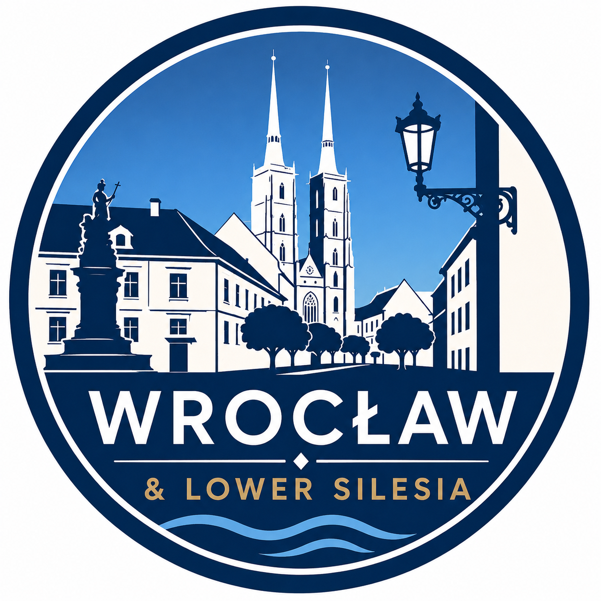

העיר העתיקה והגמדים
מסלול ראשון נעים בין כיכר השוק, הרחובות ההיסטוריים והגמדים שאסור לפספס.

Wroc-loveמסלולים חכמים למטיילים ישראליםמסלולים אינטראקטיביים בעברית שמסדרים את היום, מחברים בין המקומות הנכונים ומשאירים מספיק מקום לגילויים שבדרך.
 פותחים את המפה ומתחילים לגלות
פותחים את המפה ומתחילים לגלות
לוחצים על מקום ומגלים תמונות, סרטונים, ניווט ופוסטים מהמקום.
מסלול מלא ליום אחד בעיר. פותחים בטלפון, בוחרים תחנה ויוצאים לדרך — בלי הרשמה ובלי כרטיס אשראי.
מסלול חורפי רגוע: שווקי כריסמס, העיר העתיקה, אוסטרוב טומסקי, קפה חם וזמן למנוחה בלי לרוץ בין התחנות.
פתיחה נעימה בכיכר השוק, בין האורות, הדוכנים והרחובות המקושטים.
יום תרבותי בקצב נוח, עם מבנים היסטוריים, הנהר והאזור העתיק של העיר.
יום גמיש לבתי קפה, קניות, מקומות אהובים והפסקות חמות לאורך הדרך.
41 מסעדות, בתי קפה, מרכזי קניות ומלונות מתוך הפוסטים המקוריים שלנו — במדריך אינטראקטיבי אחד שמציג בדיוק את מה שאתם צריכים עכשיו.
מהמטבח הפולני ועד ראמן, סושי, פיצה ומקומות לערב.
עצירות טובות לקפה, קינוח, גלידה או משקה בדרך.
מ־Westfield Wroclavia ו־Renoma ועד האאוטלט ומרכזים מקומיים.
תשעה מלונות ואזורים נוחים לביקור ראשון בעיר.
טיולי יום עצמאיים מוורוצלב אל יעדים באזור ובמחוזות השכנים, המבוססים על המקומות והתוכן המקורי של WROC-LOVE.
מוזיאונים, אמנות, תיאטרון, מוזיקה, קולנוע ואדריכלות במפה אינטראקטיבית אחת — בלי מסלול קשיח.
מוסדות מוכרים לצד גלריות, בתי תיאטרון ואתרי אדריכלות.
מסננים את המפה לפי מה שמסקרן אתכם עכשיו.
מוצאים את המפה שמתאימה לסגנון ולמשך הטיול.
בלי הרשמה, בלי מייל, בלי קוד ובלי תשלום.
פותחים את המסלול בטלפון וחוזרים אליו מתי שרוצים.